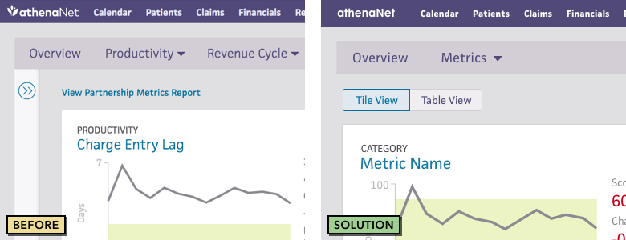
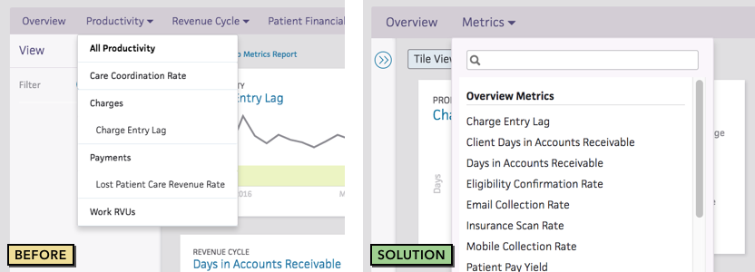
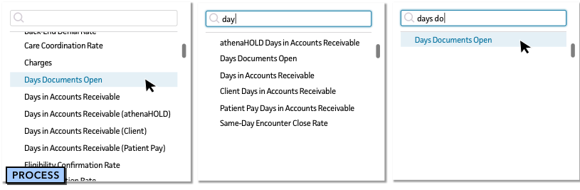
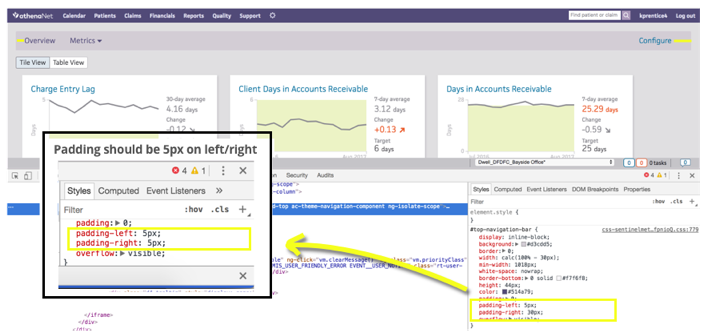
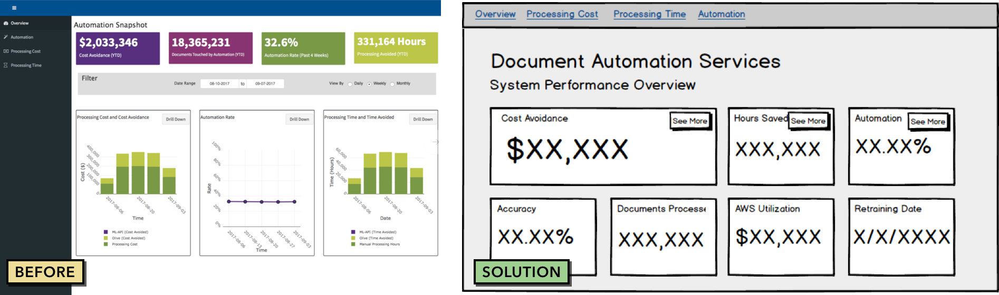
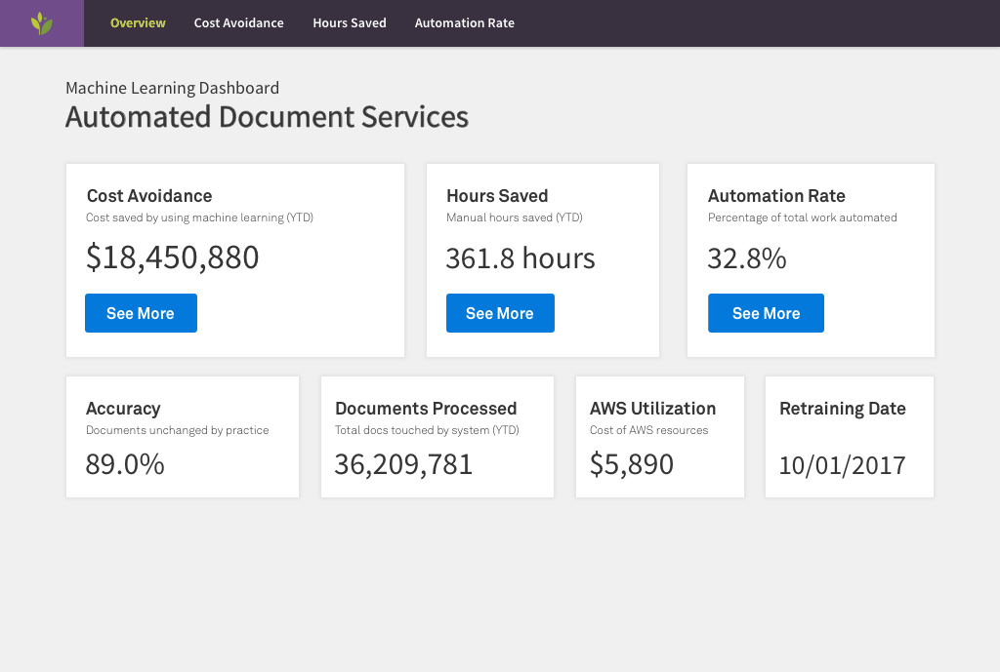
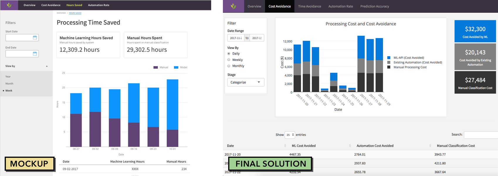
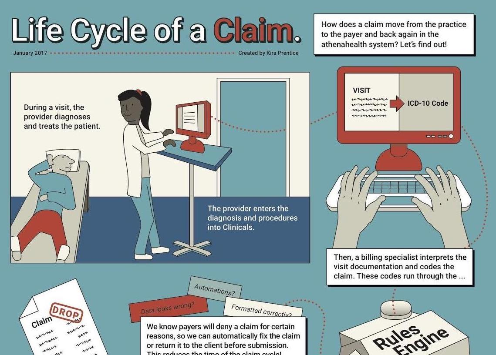
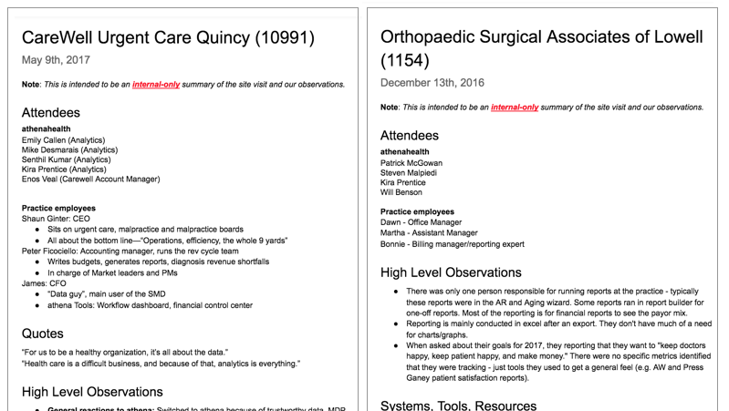

Performance Dashboard is where client performance management starts. It is a collection of financial, clinical, quality and operational metrics, curated by each practice on athenaNet to drive their business objectives. The dashboard is designed to be a glanceable overview of current status that allows for investigation of root causes and areas for opportunity.
The design challenge to to display all the information relevant to a client’s performance, both allowing clients to customize the dashboard while still surfacing the top areas for improvement. The dashboard should be easily navigable and facilitate data exploration. When utilized, Performance Dashboard should be an essential tool in improving and monitoring practice performance against important metrics.
How we learned
"I would love for the Performance Dashboard to be the first thing somebody sees when they sign on." - Denise, NMMCI
When I joined the project, eight alpha clients had already been identified as pilots for the dashboard. We held biweekly calls with all clients to listen to feedback, answer questions and pilot new functionality. Over seven months, we collected over 900 pieces of feedback. By establishing this relationship, we were able to collect honest reactions to new design work, iterate and release new features week-to-week, and build trust in the dashboard. These alpha clients remain the most anticipatory of the GA release.
I’ll talk through several specific contributions to this project.
Problem: Navigation
The overview metric information can be viewed in a table format, easier to scan for power users of Excel. Initial navigation to this view was through a link above the metric cards, which users could not find and “did not know existed”. Yikes! We implemented a toggle pattern, similar to the one present elsewhere in the dashboard to toggle between data displayed in a graph. This indicates an easy toggle between different views of the same data, without fear of navigating away from the dashboard.

Pattern allows for toggling data view between tiles and table
Discoverability of all 30 metrics in the dashboard is important: this added data is the biggest value added over the Sentinel Metrics Dashboard. Our original metric navigation, grouped in dropdowns, proved difficult to use. Although we conducted a card sort into these categories, there is enough variety between mental models that it proved difficult to select a grouping that was intuitive to all users.
We heard this in calls with clients. Users could not find dropdowns unless directed, or called them “cumbersome” and described “clicking through several of the dropdowns to find the metric [user was] looking for.” Additionally, our alpha users are all large enterprises; we could foresee greater confusion when the audience expands to include smaller practices.
As a result, we redid the metric navigation to be a searchable dropdown including all metrics. This allows users to browse all the metrics with one click, and filter immediately if they are looking for a specific metric. User feedback was positive, calling it “easy” and facilitating the common behavior of “typically ... looking for one thing.”

Original navigation layout and solution, live in athenaNet

TODO: Change this image
Problem: UX Debt not prioritized
I took point as Developer on several stories related to front-end UX debt. UX debt degrades user trust, which is important in a tool so focused on data. This work was not prioritized by the development team, so I was able to contribute to team velocity on UX-related stories.
These tasks included refactoring how metrics rendered responsively based on window size, and fixing inconsistencies in metric display and spacing. Understanding the code base also helps me more effectively provide feedback to developers. For example, an Austin team utilizing our code base completed a UX debt story that was deprioritized on our backlog, with guidance on directory structure and global UI elements.

Communicating specific CSS changes to the team
Outcome: Optimistically entering Beta
As with many projects at athena, Performance Dashboard adoption has more to do with load times and data provided than it does with UX work. However, a cohesive dashboard with intuitive navigation, consistent data display and familiar interface elements will facilitate the transition from the Sentinel Metrics predecessor. I hope my work on this project will help us meet our goal of <5% bounce rate after Beta release in 18.3.
Case Study: Internal Analytics Databoards
The Analytics department wanted to set an example of systematically tracking performance of our own initiatives and to learn from them as a data-driven department. Solution? A dashboard!
This work started with a specific scope: tracking performance of the Automated Document Processing Services Machine Learning model. A data scientist working with the team had a dashboard spun up in RShiny, tracking some of the KPIs. However, to socialize this initiative, the dashboard was being shown at a board meeting. This prompted a UX audit, to make the information clearer and to provide a roadmap for future dashboard design.
Problem: Information architecture is confusing
The original RShiny dashboard was a collection of components and data that didn’t tell a clear story. The overview page contained some (not all) of the most important information, and graphs that were redundant to drill down pages. I revised the overview page to include a snapshot of relevant information, and the drill down pages to include the detailed data about each KPI being tracked.

Used Balsamiq to communicate dashboard organization to the team
Opportunity: Utilizing Forge styling
Early on, we realized that this work could inform a future vision of how data visualizations could look and feel in athenaNet. As a result, I mocked up work using the Forge design system. Though we weren’t utilizing React or Forge components, we were able to test the UI constraints and see what worked.

Worked out of the Forge sketch document to borrow elements and grid styling
Problem: No experienced front-end developers
Since the project was under pressure with light resourcing, I did a majority of the front-end implementation. This ended up accelerating development time, because I could ensure the databoard could follow the mockups and iterate based on technical feasibility in real-time.
For example, a mockup using the Forge template had a smaller screen size to accommodate iPads. When implemented, the laptops and monitors viewing the databoard had unused real estate. I redesigned the layout to utilize the whole screen.

Iterating on mockup work to support a wider layout in the final implementation
Outcomes: Proceeding from Proof of Concept
Our RShiny app was presented at a board meeting and received as a “big success.” Our databoard proved the value of a flexible, aggregate view of business success metrics. This kicked off the second phase of the project, creating a templated Tableau workbook to be distributed to all teams, adding in data-driven tracking as a definition of done.
aDC Diversity Dashboard
Iterating on mockup work to support a wider layout in the final implementation
Portfolio Items
Dashboard Repository
Built a filterable repository to keep track of all dashboards and components currently in development at athena. The public version of this lives on Confluence.
Skill: Web development, research consolidation, teaching and learning
UX Retreat Logos
Work with UXD Operations on striking logos for the UXD retreats in 2016 and 2017. Keep asking me to do graphic design projects. I enjoy them.
Skill: Visual design

Claims Process Infographic
The claims process is complicated, and an infographic helped me (and others) understand it. Compiled based on a presentation by Brent Evansen, live on The Commons here. I have caught wind of others using the infographic in onboarding.
Skill: Visual design, infographic, teaching and learning

Site visit notes
After a site visit, distilling extensive notes into a format that will engage others is my goal. I have tried to do so in these examples.
Skill: Research
Top Workflows Demo Event
Pitched the UX top workflows initiative to the C-suite. Work included design of slides, moderating video sessions, and creating an audio montage of user frustration.
Skill: Event coordination, influencing, crushing it under pressure